[Calligraphy Science and Technology Research] Multi-Sensor Slam Navigation for ZM's AVP & HPP System
As suggested by some experts, this page will summarize the slides from ZongMu, including the latest mapping and localization technology and practice in their customer project/demo.
open course link (Chinese only): [CAIRDC] multi -source information fusion SLAM and applications
What's AVP&HPP (Home Zone Parking Pilot)
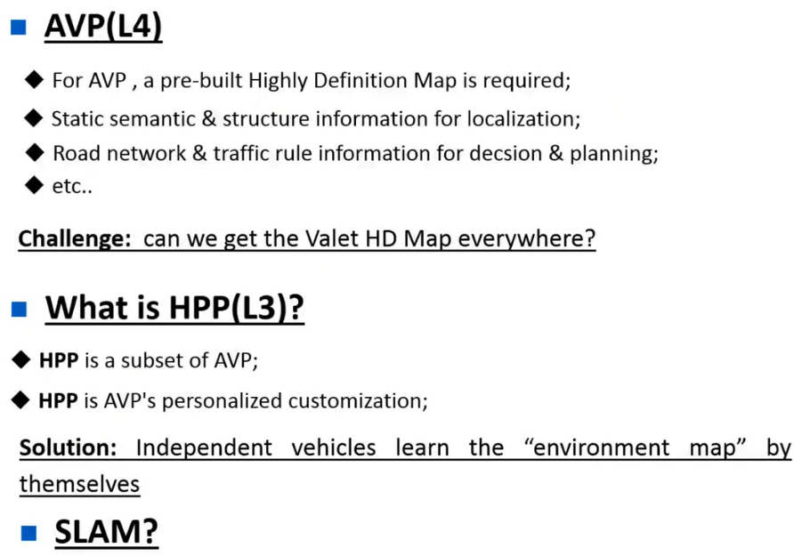
AVP summary (L4)
select the free parking slot through the HMI.
remote calling
autopilot to the specified localization
no driver in the vehicle
HD Map (supplier) is not available everywhere
map build by data collection vehicle (high precision lidar), released to public end-user
inject traffic rules and road network manually → very expensive.
for end-user, localization by camera
HPP summary(L3)
subset of AVP
np prior HD map and build map during its first driving.
the map is only used by its own vehicle.
no traffic rules and road network connection info in HPP map
Sensor Suite for ZM's AVP/HPP
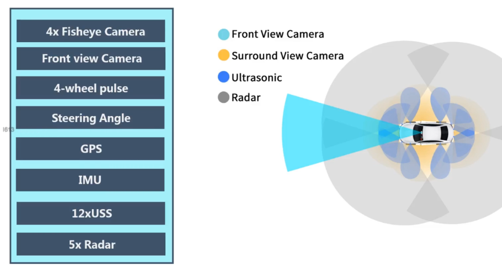
4 fisheye camera surround the vehicle
4 corner radar and 1 front radar
wheel pulse → wheel speed
IMU is low-cost level proved by vehicle itself
Lidar SLAM Mapping for AVP
cross modality mapping and localization
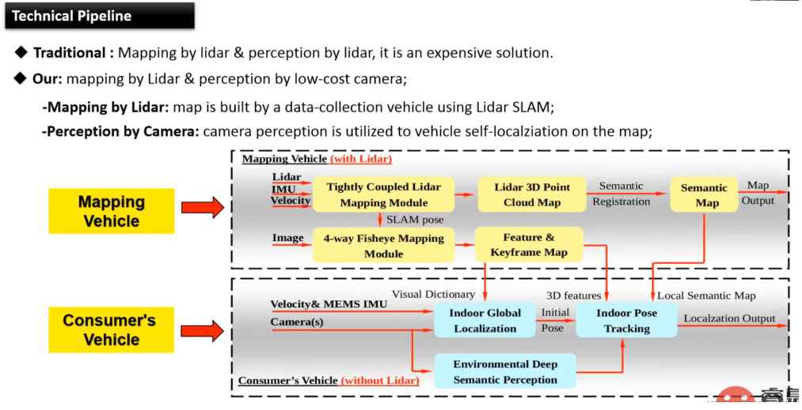
AVP Map Summary
semantic layer + lidar layer + visual feature layer
given the pose graph from lidar map layer, generate the visual map layer (4 fisheye camera) at same time, recover the visual structure of parking lot, including point, line and plane.
more easier to use video for scene recognition. The loop closure from video is better than lidar. Video can provide prior loop closure for lidar.
ICP will fail in loop closure for lidar
End Client Localization
Kalman Filter
odometry as prior/prediction
measurement correct(localization) by video
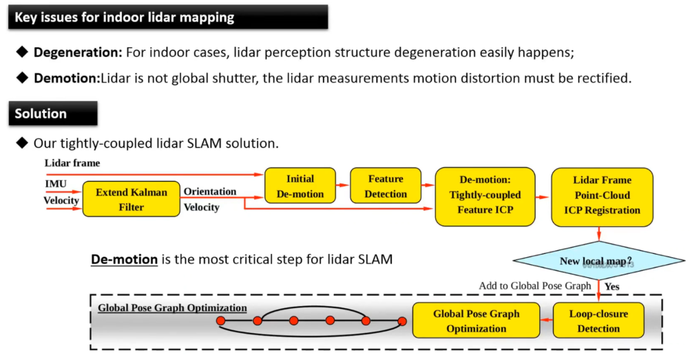
General Lidar Mapping
LOAM, just simple odometry, no loop closure
Cartgropher, low quality odometry, support loop closure, high computation cost
demotion
The measurement from spinning lidar is not at the same time. there are distortion due to the time gap between vehicle motion and lidar rotation frequency.
solved by ICP like LOAM
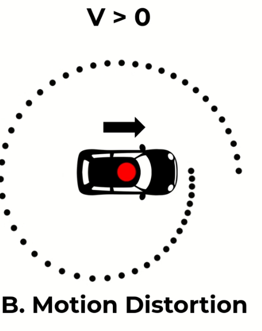
degeneration
The 6DoF pose after lidar matching is unable to be calculated, several components are lost in e.g. long corridor, strange building, large open area
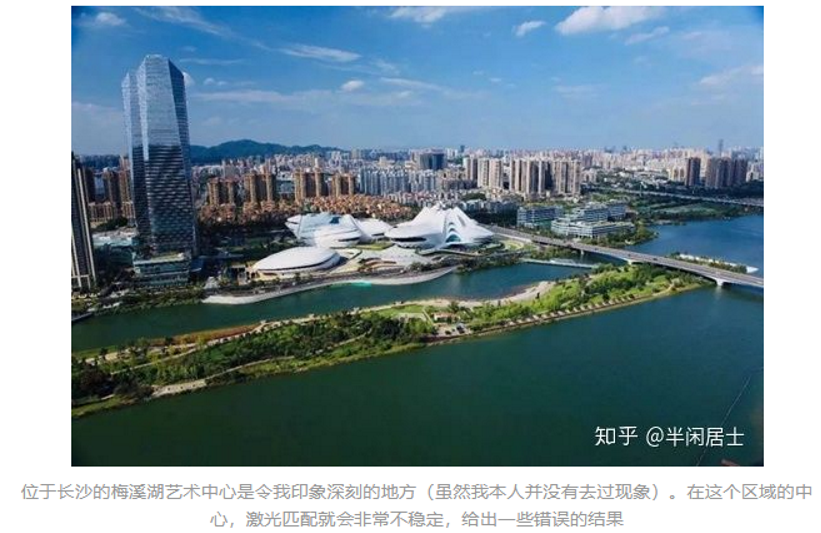
Fast Semantic Pose Tracking
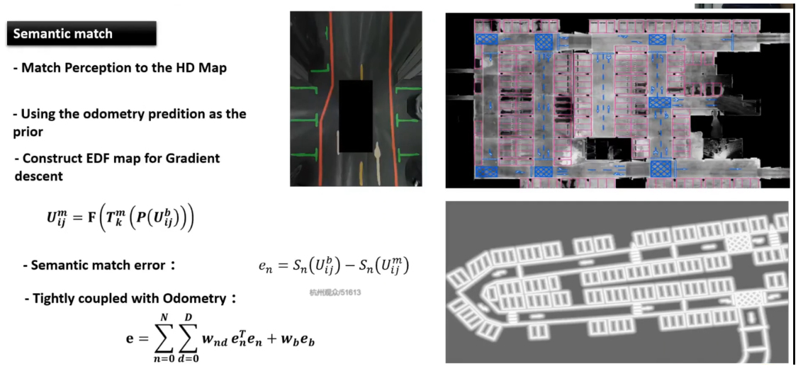
The semantic information from top right image is injected by map supplier manually. The top left image shows the semantic segmentation from real-time surrounding camera.
there are two solutions for semantic feature matching (not fully understand)
DVO/DSO in visual odometry (see equation above)
by tuning the pose to minimize the pixel error between camera  and map
and map  . The function F(.) could be treated as some kind of projection/conversion between map and camera.
. The function F(.) could be treated as some kind of projection/conversion between map and camera.
In order to compute the Jacobian matrix for map, we need to construct the gradient field for map (just dilate the vector map???).
The final cost function should also be able to handle the semantic degradation issue, in case there is no semantic information or only road lane boundary. Since the lane line is parallel, it's infeasible for l ongitudinal localization. In this case, we should add the odometry constraint under tightly coupled way. Now the hessian matrix of the cost function will never degrade.
This method is every efficient.
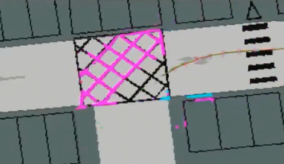
Particle filter
it's very robust for noisy measurement, e.g. the semantic segmentation over non-flat area (ramp road in parking lot).
it's a discretized sampling method in space, the localization accuracy is not very high and localization position may flutter sometimes.
we can fuse particle filter and direction method(DSO/DVO) with gmapping or fast-slam method. We can improve the distribution of particle filter with direction method.
based on less particles, we can get more accurate localization result.
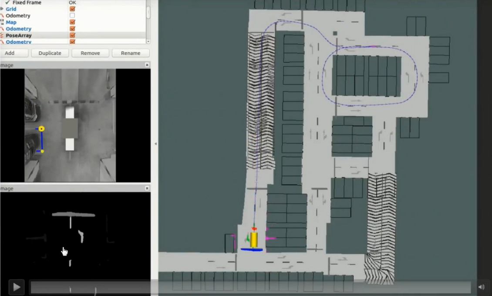
Visual SLAM for HPP
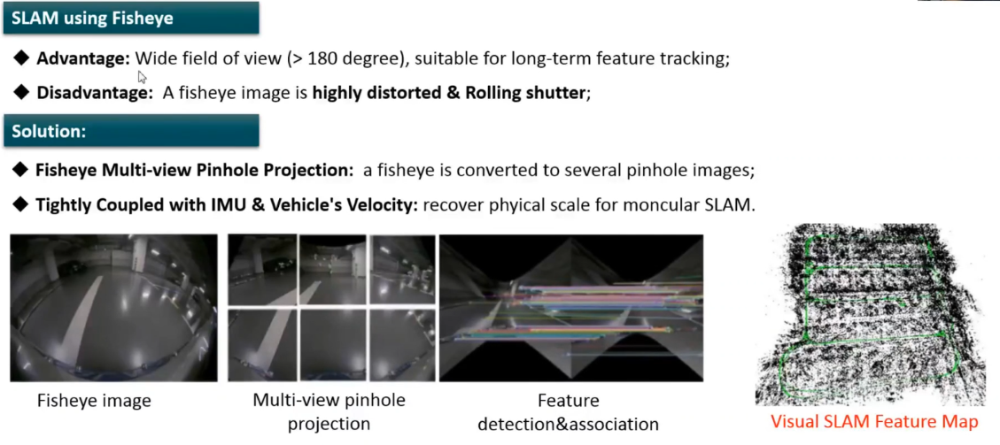
The visual slam is based on 4 fisheye camera surround the vehicle. Each fisheye camera has a large field of view which is suitable for long-term tracking for geometry feature.
However, the image of fisheye camera distorted heavily and suffers from rolling shutter issue (vehicle motion + dynamic object). We split the image into pieces. The distortion correction and geometry feature extraction is based on each sub-image.
As we known, the scale drift of mono-camera will generate error estimation for loop closure. We will recover the real scale by adding the wheel speed and IMU in the tightly coupled cost function.
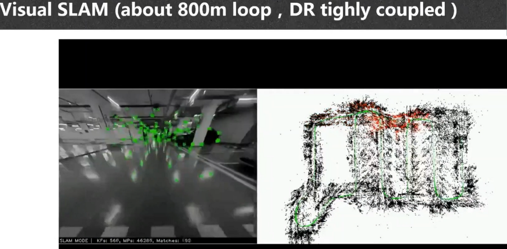
Multi-camera visual SLAM
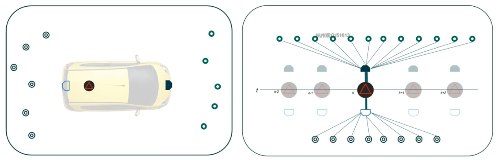
Only single camera for mapping or localization is not enough. The first and rear camera will be shielded by other vehicles easily. In addition, the texture-less place (big white wall) will also make the mapping crashed. Hence, we need to fuse multiple camera from different position to enhance our slam and improve its robustness.
The image above shows the solution from ZM. Let's assume all the camera has been calibrated so that they can be treated as a virtual single camera 360°? They put the virtual image into the common backend optimization. Here is an example
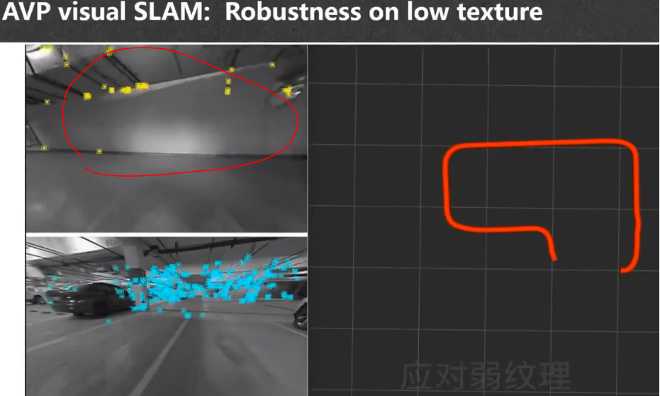
Here is another advantage for multiple camera. It's feasible for cross loop closure and increase the chance to get more loop closures. our map quality shall be improved.
The image below shows the cross loop closure between front and rear camera. same as left-right.
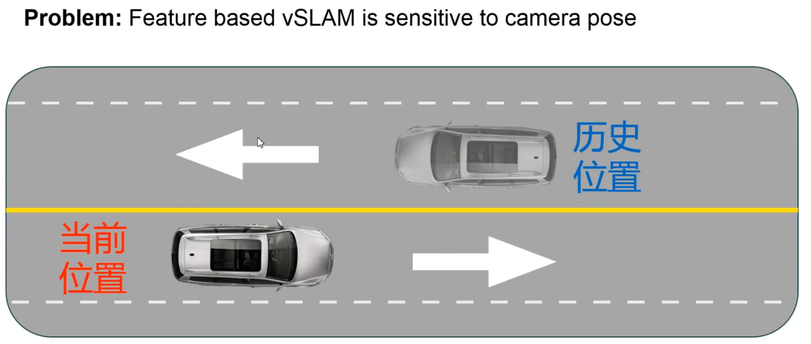
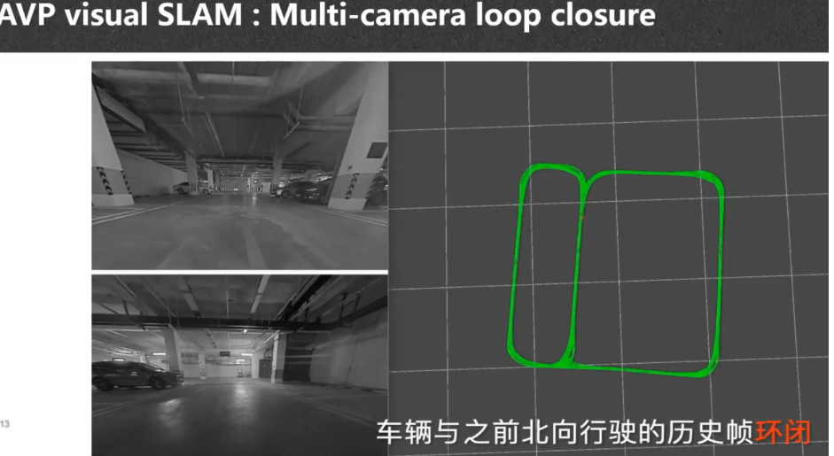
Manhattan Constraint
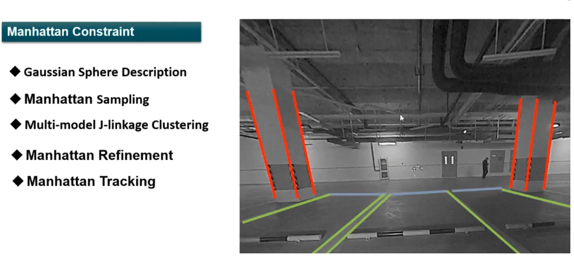
The parking lot is a man-made building structure which is satisfied with Manhattan constraint (the wall is always vertical to road surface). We can use this assumption to extract the camera pose to constraint the rotation.
Each line from the image will be treated as a single point on the Gaussian Sphere. Different color belongs to different axis in Gaussian sphere.[not fully understand]
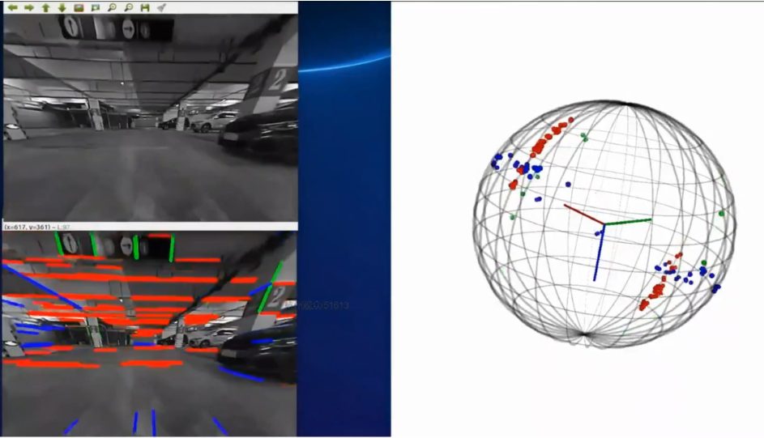
We can sample from the sphere and execute the J-linkage cluster methods → search a potential xyz-aix to best describe the world coordinate?
Once the Manhattan world is determined, then we can track it in later frames. Now, even if there is no IMU, the position and rotation (roll, pitch ,yaw) are observable in Manhattan world. We can use camera pose to compute the relative transformation(external calibration parameters) of four fisheye camera.
Radar Mapping
Here is a comparison between lidar mapping (bottom left) and radar mapping (bottom right).
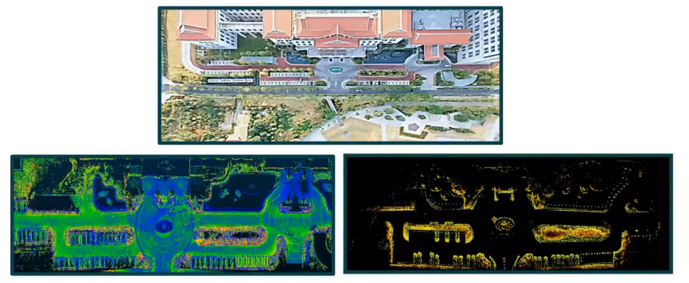
The point cloud from radar is more sparse than lidar. And due to its resolution issue in elevation, the point cloud accuracy is low. There is no chance to execute ICP algorithm to get the relative pose between two radar point cloud frames.
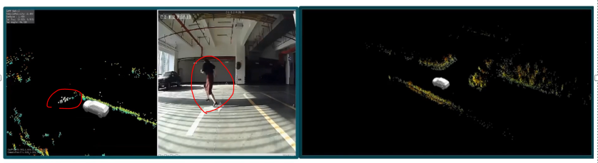
We can solve it with probabilistic method. The speaker doesn't talk much details.
(I will discuss it later in Bosch Road Signature).
Multi-sensor fusion slam and state estimation
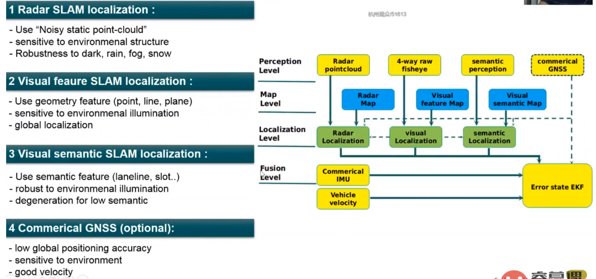
We use different map layer to improve the robustness of our localization. The three map should be built under the same space and time coordinate. (There is no chance to do offline map alignment?)
All the localization from different map layer will be estimated separately. E.g. the semantic localization has lowest frequency.
Then the localization result plus the IMU+wheel speed will be fused in ESEKF to get a high frequency and precision localization.
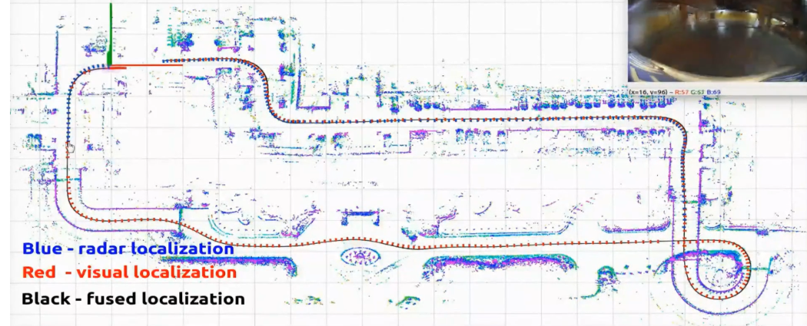
Q&A Session
Q:
Is pre-build HD map necessary for AVP?
A:
Yes. The map supplier should provide the map(lidar) including man-made semantic information(road network, traffic rule) and high dynamic information (occupied/non-occupied parking slot). The format of map could be vector map or occupancy map.
Q:
How to deal with the dynamic changes for the AVP map？
A:
During mapping, all dynamic object should be removed by deep learning. The landmark or observation for map only contain the static object.
E.g. For feature matching, the feature point number from static object should be more than 50%, otherwise the system will crash.
Q:
Is NDT feasible for radar slam? How to do the registration of radar point cloud?
A:
No. ZM uses probabilistic method, no details to be publish. In addition, all the video, semantic and radar map layer should be built under the same time and space coordinate.
Radar is robust against rainy, foggy, snow scene compared with Lidar. Radar is cheap and can measure the relative speed for other objects.
The radar locations is noisy and low resolution in elevation direction.
Q:
Is the initial localization position critical for fused localization?
A:
It depends on which method for localization. For particle filter, it's more easier to converge and depends on the coverage area by initial particles.
Radar slam is little bit difficult due to noisy.
Q:
In stereo-camera slam, the points faraway are always wrong and flutter dramatically.
A:
It depends on the length of baseline and image resolution. The longer distance between two cameras and the higher resolution of image will make a more accurate depth estimation for points faraway.
There is some report shows the standard deviation of depth estimation in stereo-camera is has positive correlation with the square of distance. The ratio between baseline and depth of scene should be below 100, otherwise they're useless points.
In addition, it's been better to use a sliding widow optimization method(VINS, ORBSLAM etc) to estimate the inverse depth in scene rather than the estimation based on only single frame of stereo-camera.
Q:
How to calibrate the cameras surround the vehicle?
A:
There are two ways.
1.Let's say there is a specified calibration workshop where lots of chessboard with known global pose are painted on the wall. We can get the global pose of each camera in global frame so that their relative transformation of each camera is known.
2.just run the visual slam for each camera and then align the trajectories of slam graphs. We can also get the relative transformation of each camera.
Q:
If there is degradation in VINS, how to prevent it destroy the final localization?
A:
The localization from different modality should have uncertainty. The ESEKF as fusion center will handle this. And before that, there is a association gate to check the consistency among different localization and prediction result like chi-square validation. We should not use the measurement without consistency check.
Q:
Do we need a high-cost IMU for slam?
A:
No. We only use the yaw rate from IMU. The angle velocity bias of IMU should be estimated correctly by tightly coupled slam. After each iteration, the odometry should be corrected otherwise the system will crash.
Q:
How about the front-end camera?
A:
The front camera will not be used in localization due to the narrow field of view. It's mainly for semantic segmentation and matching. We could even remove the front camera and only rely on the 4 fisheye camera surround the vehicle.
RB Gen5 Radar and localization/mapping
gen5 radar spec
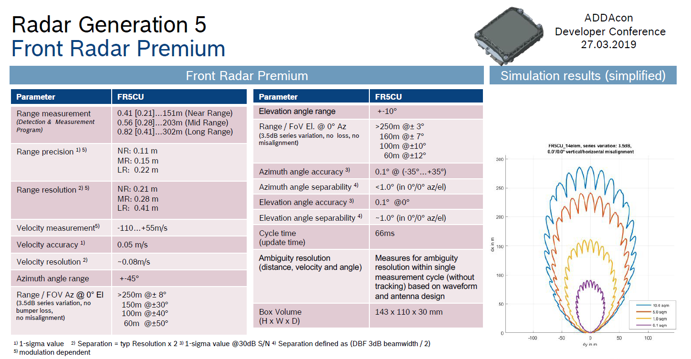
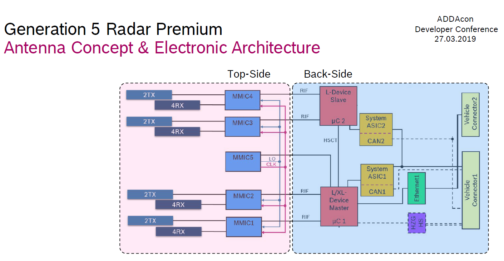
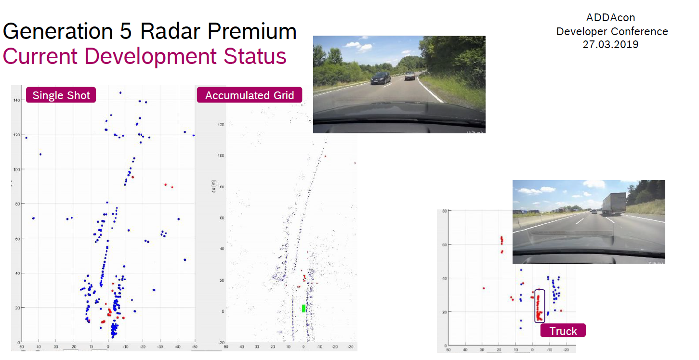
PJMP radar road signature
based on Gaussian mixture model, it implement the gaussian alignment to recover the pose and other steps for gaussian fusion.
Please find details
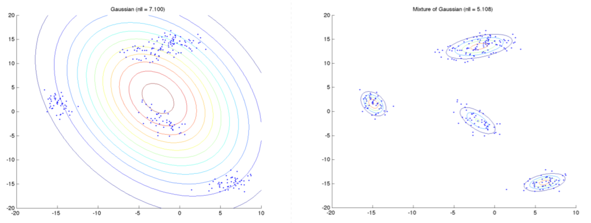
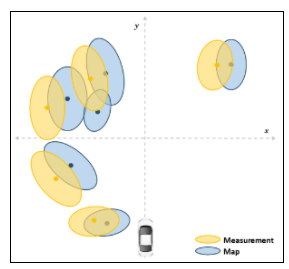
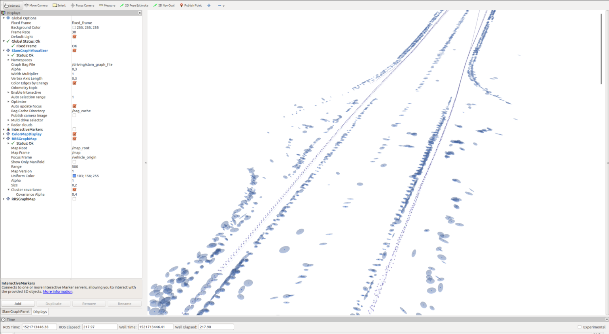